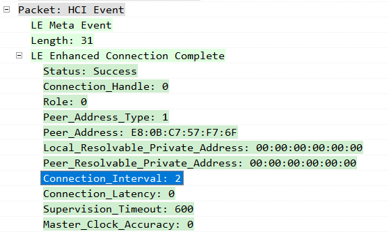
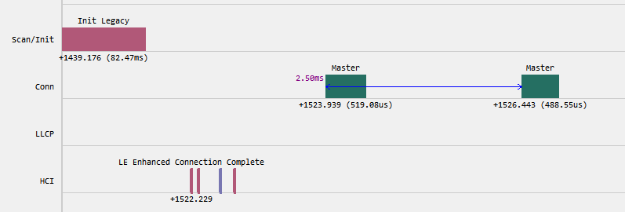

为满足对无线通信的个性化需求，ING918 系列产品将在全面支持 BLE 标准的基础上逐步引入扩展功能。 最新发布的 SDK 4.0.0 加入了两项 BLE 扩展功能。
更小的连接间隔
连接状态下，BLE 链路层在连接事件中传输数据信道 PDU。连接事件的起始位置以固定间隔均匀分布，互不重叠。 蓝牙核心规范中定义连接间隔为 1.25𝑚𝑠 的整数倍，范围从 7.5𝑚𝑠 到 4.0𝑠。
“更小的连接间隔”扩展将上述范围扩大到从 2.5𝑚𝑠 到 4.0𝑠。使用 2.5𝑚𝑠 的连接间隔可以显著降低 BLE 空口传输带来的 时延。
使用 extension 包创建主、从两个程序。主设备调用 gap_ext_create_connection 建立连接时，
将 interval_min 和 interval_max 两个参数设置为 2。使用 Trace 工具抓取log，解析 HCI 消息，可发现 2.5𝑚𝑠 的
连接间隔生效：

可观察到主设备以 2.5𝑚𝑠 的连接间隔周期性地调度连接事件：

说明: 从 6.5.0 开始，最小连接进一步缩减为 1.25𝑚𝑠。启用
LL_ENABLE_MULTIPLES_OF_1MS_INTERVAL 选项后，连接间隔变为以 1𝑚𝑠 为单位。
主从两端同时启用该选项，并在调用 gap_ext_create_connection 时将 interval_min 和 interval_max
两个参数都设置为 `1`，就可以实现 **1𝑚𝑠 连接间隔**。
从 6.5.1 开始，调用 ll_set_conn_interval_unit(X) 可将连接间隔的时间单位从 1.25ms 切换为 X μs。
数据包直发、直收
数据包直发、直收扩展为程序提供了以指定参数直接发送或者接收一个数据包的能力。
数据包直发时可指定以下参数：
- 信道
- 发射功率
- PHY (1M/2M/Coded)
- Access Address
- CRC 初始值
- 空口发送时间。
数据包直收时可指定以下参数：
- 信道
- PHY (1M/2M/Coded)
- Access Address
- CRC 初始值
- 接收窗口（空口的起止时间）。
成功接收到数据包后，数据包的空口起始时间可通过 API 获取。
每个数据包载荷最大长度为 255 字节。每个数据包还可额外传输两个比特，其用途由开发者任意指定。
有关帧结构、API 等详细信息请参阅《INGCHIPS BLE Extensions Reference》。